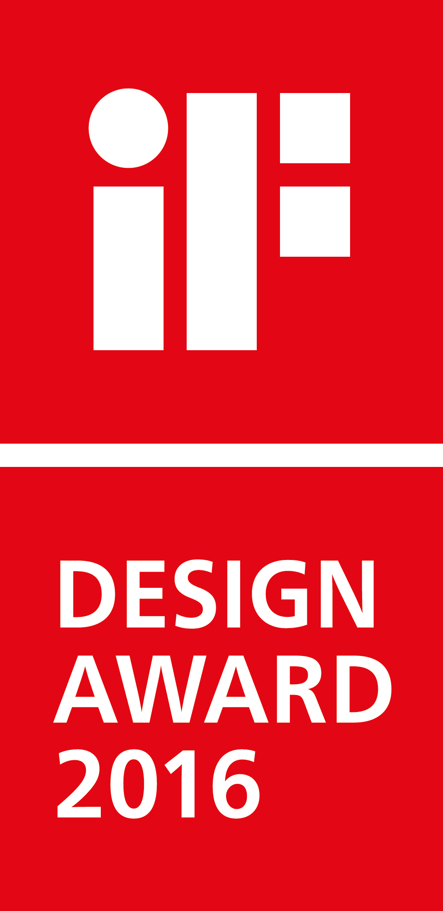
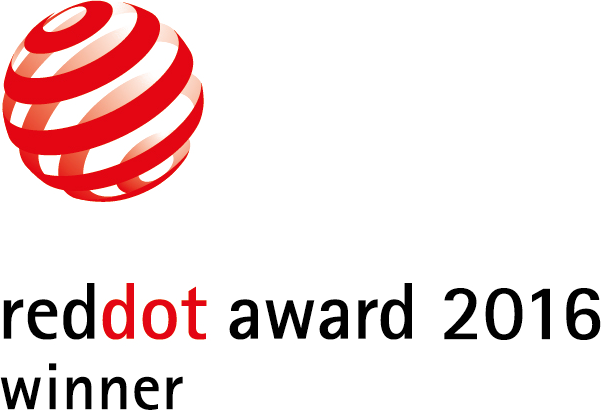
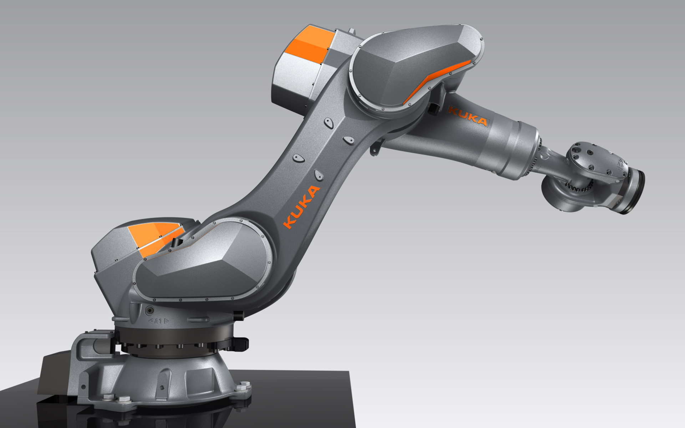
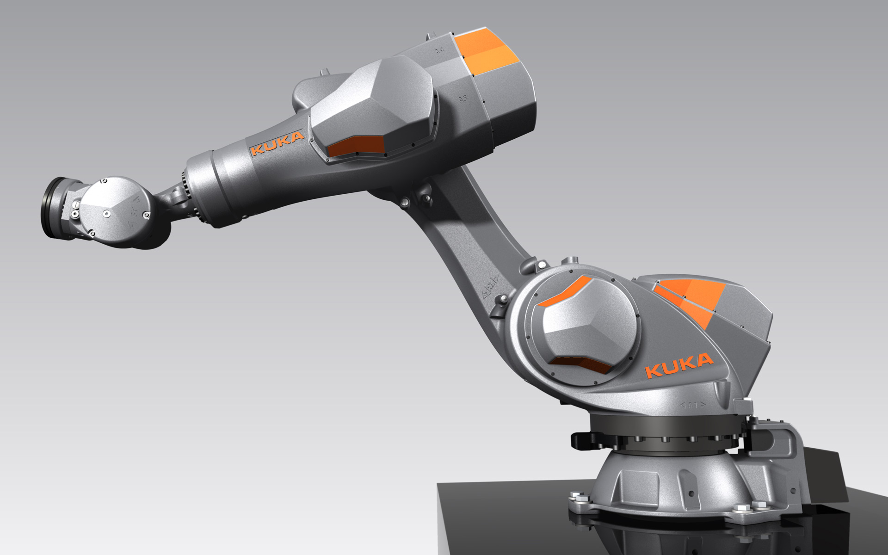
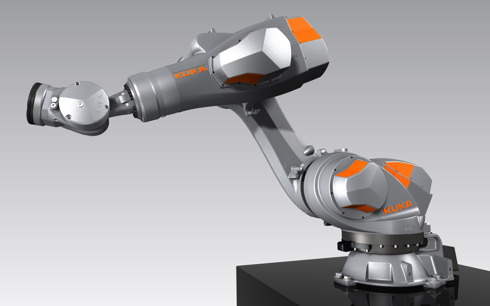
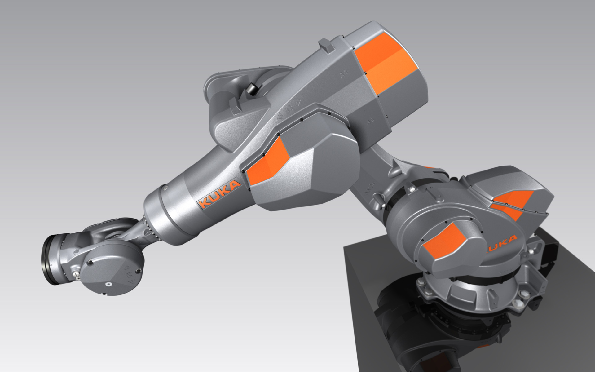

KUKA KR 120 nano F exclusive
Foundry Robot
KUKA KR 120 nano F exclusive
Foundry Roboter
When the heat is on, foundry robots get the job done without even breaking a sweat
The KR 120 nano F is optimized for the extreme conditions in cleaning plants and washing cells. It is used
especially in foundries and in the automotive industry for motor production, in ceramics and glass
industry applications, ensuring that tasks are carried out faster and more efficiently.
The mechanical parts of the robot are completely capsuled and all electric cables are installed
well-protected inside the body. The interior is pressurized with compressed air to prevent infiltration
of liquids. The coated surface protects against corrosion and is resistant to lyes and acids. By the
high safety class IP 69 he is perfectly suitable for wet chemical cleaning, diving and high pressure
cleaning methods also in connection with highly active cleaning agents and disinfectants.
Expressive edges and facets emphasize the precision and reliability of the robot. The design shows the
remarkable resistance of the machine even in rough working surroundings and it confirms the
sustainability. The metallic color results from the surface coating and in addition, orange accents and
company logos give the machine the unmistakable KUKA look.
The robot is available for loads of 120 kg (265 lbs), its weight is 963 kg ( 2123 lbs) and its reach is
2.100 mm ( 83 inches).
Selić Industriedesign service: Design concept, design consultation, design sketches, CAD design support,
CAD freeform modeling, design refinement, processing of design data for the engineering department
Foundry Roboter erledigen ihre Arbeit auch bei hoher Hitze mühelos
Der KR 120 nano F ist speziell für die extremen Bedingungen in Reinigungsanlagen und Waschzellen
optimiert. Er wird in Gießereien und in der Motorenbaubranche eingesetzt.
Der Roboter besitzt eine komplette Kapselung der Mechanik und einen durchgängig innenliegenden
Kabelsatz. Sein Innenraum wird mit Druckluft beaufschlagt, um das Eindringen von Flüssigkeiten zu
verhindern. Die beschichtete Oberfläche schützt vor Korrosion und ist resistent gegen Laugen und Säuren.
Durch die hohe Schutzklasse IP 69 ist er für nasschemische Reinigung, Tauch- und
Hochdruck-Reinigungsverfahren perfekt geeignet, auch in Verbindung mit hoch aktiven Reinigungs- und
Desinfektionsmitteln.
Ausdrucksstarke Kanten und Facetten betonen die Präzision und Zuverlässigkeit des Roboters. Das Design
zeigt die außergewöhnliche Resistenz der Maschine selbst in rauen Arbeitsumgebungen und bekräftigt deren
Nachhaltigkeit. Die metallische Farbgebung resultiert aus der Oberflächenbeschichtung, zusätzlich geben
orangefarbene Akzente und Firmenlogos der Maschine den unverkennbaren KUKA-Look.
Der Roboter ist für Traglasten von 120 kg ausgelegt, sein Eigengewicht beträgt 963 kg, die Reichweite
2100 mm.
Selić Industriedesign Dienstleistung: Designkonzept, Designberatung, Designentwürfe, CAD-Design
Unterstützung, CAD-Freiform-Modellierung und Detailgestaltung, Aufbereitung von Designdaten für die
Konstruktion




Images © Selić Industriedesign